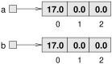

7 Arrays and References
Up to this point, the only variables we have used were for individual values such as numbers or strings. In this chapter, you’ll learn how to store multiple values of the same type by using a single variable. This language feature will enable you to write programs that manipulate larger amounts of data.
For example, Exercise 6.5 asked you to check whether every letter in a string appears exactly twice. One algorithm (which hopefully you already discovered) loops through the string 26 times, once for each lowercase letter:
// outer loop: for each lowercase letter
for (char c = 'a'; c <= 'z'; c++) {
// inner loop: count how many times the letter appears
for (int i = 0; i < str.length(); i++) {
...
// if the count is not 0 or 2, return falseThis “nested loops” approach is inefficient, especially when the string is long. For example, there are more than 3 million characters in War and Peace; to process the whole book, the nested loop would run about 80 million times.
Another algorithm would initialize 26 variables to zero, loop through the string one time, and use a giant if statement to update the variable for each letter. But who wants to declare 26 variables?
That’s where arrays come in. We can use a single variable to store 26 integers. Rather than use an if statement to update each value, we can use arithmetic to update the \(n\)th value directly. We will present this algorithm at the end of the chapter.
7.1 Creating Arrays
An array is a sequence of values; the values in the array are called elements. You can make an array of ints, doubles, Strings, or any other type, but all the values in an array must have the same type.
To create an array, you have to declare a variable with an array type and then create the array itself. Array types look like other Java types, except they are followed by square brackets ([]). For example, the following lines declare that counts is an “integer array” and values is a “double array”:
int[] counts;
double[] values;To create the array itself, you have to use the new operator, which you first saw in Section 3.2. The new operator allocates memory for the array and automatically initializes all of its elements to zero:
counts = new int[4];
values = new double[size];The first assignment makes counts refer to an array of four integers. The second makes values refer to an array of doubles, but the number of elements depends on the value of size (at the time the array is created).
Of course, you can also declare the variable and create the array with a single line of code:
int[] counts = new int[4];
double[] values = new double[size];You can use any integer expression for the size of an array, as long as the value is nonnegative. If you try to create an array with -4 elements, for example, you will get a NegativeArraySizeException. An array with zero elements is allowed, and there are special uses for such arrays.
You can initialize an array with a comma-separated sequence of elements enclosed in braces, like this:
int[] a = {1, 2, 3, 4};This statement creates an array variable, a, and makes it refer to an array with four elements.
7.2 Accessing Elements
When you create an array with the new operator, the elements are initialized to zero. Figure 7.1 shows a memory diagram of the counts array so far.
int array.
The arrow indicates that the value of counts is a reference to the array. You should think of the array and the variable that refers to it as two different things. As you’ll soon see, we can assign a different variable to refer to the same array, and we can change the value of counts to refer to a different array.
The boldface numbers inside the boxes are the elements of the array. The lighter numbers outside the boxes are the indexes used to identify each location in the array. As with strings, the index of the first element is 0, not 1. For this reason, we sometimes refer to the first element as the “zeroth” element.
The [] operator selects elements from an array:
System.out.println("The zeroth element is " + counts[0]);You can use the [] operator anywhere in an expression:
counts[0] = 7;
counts[1] = counts[0] * 2;
counts[2]++;
counts[3] -= 60;Figure 7.2 shows the result of these statements.
You can use any expression as an index, as long as it has type int. One of the most common ways to index an array is with a loop variable. For example:
int i = 0;
while (i < 4) {
System.out.println(counts[i]);
i++;
}This while loop counts up from 0 to 4. When i is 4, the condition fails and the loop terminates. So the body of the loop is executed only when i is 0, 1, 2, or 3. In this context, the variable name i is short for “index”.
Each time through the loop, we use i as an index into the array, displaying the \(i\)th element. This type of array processing is usually written as a for loop:
for (int i = 0; i < 4; i++) {
System.out.println(counts[i]);
}For the counts array, the only legal indexes are 0, 1, 2, and 3. If the index is negative or greater than 3, the result is an ArrayIndexOutOfBoundsException.
7.3 Displaying Arrays
You can use println to display an array, but it probably doesn’t do what you would like. For example, say you print an array like this:
int[] a = {1, 2, 3, 4};
System.out.println(a);The output is something like this:
[I@bf3f7e0The bracket indicates that the value is an array, I stands for “integer”, and the rest represents the address of the array in memory.
If we want to display the elements of the array, we can do it ourselves:
public static void printArray(int[] a) {
System.out.print("{" + a[0]);
for (int i = 1; i < a.length; i++) {
System.out.print(", " + a[i]);
}
System.out.println("}");
}Given the previous array, the output of printArray is as follows:
{1, 2, 3, 4}The Java library includes a class, java.util.Arrays, that provides methods for working with arrays. One of them, toString, returns a string representation of an array. After importing Arrays, we can invoke toString like this:
System.out.println(Arrays.toString(a));And the output is shown here:
[1, 2, 3, 4]Notice that Arrays.toString uses square brackets instead of curly braces. But it beats writing your own printArray method.
7.4 Copying Arrays
As explained in Section 7.2, array variables contain references to arrays. When you make an assignment to an array variable, it simply copies the reference. But it doesn’t copy the array itself. For example:
double[] a = new double[3];
double[] b = a;These statements create an array of three doubles and make two different variables refer to it, as shown in Figure 7.3.
Any changes made through either variable will be seen by the other. For example, if we set a[0] = 17.0, and then display b[0], the result is 17.0. Because a and b are different names for the same thing, they are sometimes called aliases.
If you actually want to copy the array, not just the reference, you have to create a new array and copy the elements from one to the other, like this:
double[] b = new double[3];
for (int i = 0; i < 3; i++) {
b[i] = a[i];
}java.util.Arrays provides a method named copyOf that performs this task for you. So you can replace the previous code with one line:
double[] b = Arrays.copyOf(a, 3);The second parameter is the number of elements you want to copy, so copyOf can also be used to copy part of an array. Figure 7.4 shows the state of the array variables after invoking Arrays.copyOf.

The examples so far work only if the array has three elements. It is better to generalize the code to work with arrays of any size. We can do that by replacing the magic number, 3, with a.length:
double[] b = new double[a.length];
for (int i = 0; i < a.length; i++) {
b[i] = a[i];
}All arrays have a built-in constant, length, that stores the number of elements. In contrast to String.length(), which is a method, a.length is a constant. The expression a.length may look like a method invocation, but there are no parentheses and no arguments.
The last time the loop gets executed, i is a.length - 1, which is the index of the last element. When i is equal to a.length, the condition fails and the body is not executed—which is a good thing, because trying to access a[a.length] would throw an exception.
Of course, we can replace the loop altogether by using Arrays.copyOf and a.length for the second argument. The following line produces the same result shown in Figure 7.4:
double[] b = Arrays.copyOf(a, a.length);The Arrays class provides many other useful methods like Arrays.compare, Arrays.equals, Arrays.fill, and Arrays.sort. Take a moment to read the documentation by searching the web for java.util.Arrays.
7.5 Traversing Arrays
Many computations can be implemented by looping through the elements of an array and performing an operation on each element. Looping through the elements of an array is called a traversal:
int[] a = {1, 2, 3, 4, 5};
for (int i = 0; i < a.length; i++) {
a[i] *= a[i];
}This example traverses an array and squares each element. At the end of the loop, the array has the values {1, 4, 9, 16, 25}.
Another common pattern is a search, which involves traversing an array and “searching” for a particular element. For example, the following method takes an array and a value, and it returns the index where the value appears:
public static int search(double[] array, double target) {
for (int i = 0; i < array.length; i++) {
if (array[i] == target) {
return i;
}
}
return -1; // not found
}If we find the target value in the array, we return its index immediately. If the loop exits without finding the target, it returns -1, a special value chosen to indicate a failed search. (This code is essentially what the String.indexOf method does.)
The following code searches an array for the value 1.23, which is the third element. Because array indexes start at 0, the output is 2:
double[] array = {3.14, -55.0, 1.23, -0.8};
int index = search(array, 1.23);
System.out.println(index);Another common traversal is a reduce operation, which “reduces” an array of values down to a single value. Examples include the sum or product of the elements, the minimum, and the maximum. The following method takes an array and returns the sum of its elements:
public static double sum(double[] array) {
double total = 0.0;
for (int i = 0; i < array.length; i++) {
total += array[i];
}
return total;
}Before the loop, we initialize total to 0. Each time through the loop, we update total by adding one element from the array. At the end of the loop, total contains the sum of the elements. A variable used this way is sometimes called an accumulator, because it “accumulates” the running total.
7.6 Random Numbers
Most computer programs do the same thing every time they run; programs like that are called deterministic. Usually, determinism is a good thing, since we expect the same calculation to yield the same result. But for some applications, we want the computer to be unpredictable. Games are an obvious example, but there are many others, like scientific simulations.
Making a program nondeterministic turns out to be hard, because it’s impossible for a computer to generate truly random numbers. But there are algorithms that generate unpredictable sequences called pseudorandom numbers. For most applications, they are as good as random.
If you did Exercise 3.4, you have already seen java.util.Random, which generates pseudorandom numbers. The method nextInt takes an integer argument, n, and returns a random integer between 0 and n - 1 (inclusive).
If you generate a long series of random numbers, every value should appear, at least approximately, the same number of times. One way to test this behavior of nextInt is to generate a large number of values, store them in an array, and count the number of times each value occurs.
The following method creates an int array and fills it with random numbers between 0 and 99. The argument specifies the desired size of the array, and the return value is a reference to the new array:
public static int[] randomArray(int size) {
Random random = new Random();
int[] a = new int[size];
for (int i = 0; i < a.length; i++) {
a[i] = random.nextInt(100);
}
return a;
}The following main method generates an array and displays it by using the printArray method from Section 7.3. We could have used Arrays.toString, but we like seeing curly braces instead of square brackets:
public static void main(String[] args) {
int[] array = randomArray(8);
printArray(array);
}Each time you run the program, you should get different values. The output will look something like this:
{15, 62, 46, 74, 67, 52, 51, 10}7.7 Building a Histogram
If these values were exam scores—and they would be pretty bad exam scores in that case—the teacher might present them to the class in the form of a histogram. In statistics, a histogram is a set of counters that keeps track of the number of times each value appears.
For exam scores, we might have 10 counters to keep track of how many students scored in the 90s, the 80s, etc. To do that, we can traverse the array and count the number of elements that fall in a given range.
The following method takes an array and two integers. It returns the number of elements that fall in the range from low to high - 1:
public static int inRange(int[] a, int low, int high) {
int count = 0;
for (int i = 0; i < a.length; i++) {
if (a[i] >= low && a[i] < high) {
count++;
}
}
return count;
}This pattern should look familiar: it is another reduce operation. Notice that low is included in the range (>=), but high is excluded (<). This design keeps us from counting any scores twice.
Now we can count the number of scores in each grade range. We add the following code to our main method:
int[] scores = randomArray(30);
int a = inRange(scores, 90, 100);
int b = inRange(scores, 80, 90);
int c = inRange(scores, 70, 80);
int d = inRange(scores, 60, 70);
int f = inRange(scores, 0, 60);This code is repetitive, but it is acceptable as long as the number of ranges is small. Suppose we wanted to keep track of the number of times each individual score appears. Then we would have to write 100 lines of code:
int count0 = inRange(scores, 0, 1);
int count1 = inRange(scores, 1, 2);
int count2 = inRange(scores, 2, 3);
...
int count99 = inRange(scores, 99, 100);What we need is a way to store 100 counters, preferably so we can use an index to access them. Wait a minute—that’s exactly what an array does.
The following fragment creates an array of 100 counters, one for each possible score. It loops through the scores and uses inRange to count how many times each score appears. Then it stores the results in the counts array:
int[] counts = new int[100];
for (int i = 0; i < counts.length; i++) {
counts[i] = inRange(scores, i, i + 1);
}Notice that we are using the loop variable i three times: as an index into the counts array, and in the last two arguments of inRange.
The code works, but it is not as efficient as it could be. Every time the loop invokes inRange, it traverses the entire array. It would be better to make a single pass through the scores array.
For each score, we already know which range it falls in—the score itself. We can use that value to increment the corresponding counter. This code traverses the array of scores only once to generate the histogram:
int[] counts = new int[100];
for (int i = 0; i < scores.length; i++) {
int index = scores[i];
counts[index]++;
}Each time through the loop, it selects one element from scores and uses it as an index to increment the corresponding element of counts. Because this code traverses the array of scores only once, it is much more efficient.
7.8 The Enhanced for Loop
Since traversing arrays is so common, Java provides an alternative syntax that makes the code more compact. Consider a for loop that displays the elements of an array on separate lines:
for (int i = 0; i < values.length; i++) {
int value = values[i];
System.out.println(value);
}We could rewrite the loop like this:
for (int value : values) {
System.out.println(value);
}This statement is called an enhanced for loop, also known as the “for each” loop. You can read the code as, “for each value in values”. It’s conventional to use plural nouns for array variables and singular nouns for element variables.
Notice how the single line for (int value : values) replaces the first two lines of the standard for loop. It hides the details of iterating each index of the array, and instead, focuses on the values themselves.
Using the enhanced for loop, and removing the temporary variable, we can write the histogram code from the previous section more concisely:
int[] counts = new int[100];
for (int score : scores) {
counts[score]++;
}Enhanced for loops often make the code more readable, especially for accumulating values. But they are not helpful when you need to refer to the index, as in search operations:
for (double d : array) {
if (d == target) {
// array contains d, but we don't know where
}
}7.9 Counting Characters
We now return to the example from the beginning of the chapter and present a solution to Exercise 6.5 using arrays. Here is the problem again:
A word is said to be a “doubloon” if every letter that appears in the word appears exactly twice. Write a method called
isDoubloonthat takes a string and checks whether it is a doubloon. To ignore case, invoke thetoLowerCasemethod before checking.
Based on the approach from Section 7.7, we will create an array of 26 integers to count how many times each letter appears. We convert the string to lowercase, so that we can treat 'A' and 'a' (for example) as the same letter.
int[] counts = new int[26];
String lower = s.toLowerCase();We can use a for loop to iterate each character in the string. To update the counts array, we need to compute the index that corresponds to each character. Fortunately, Java allows you to perform arithmetic on characters:
for (int i = 0; i < lower.length(); i++) {
char letter = lower.charAt(i);
int index = letter - 'a';
counts[index]++;
}If letter is 'a', the value of index is 0; if letter is 'b', the value of index is 1, and so on.
Then we use index to increment the corresponding element of counts. At the end of the loop, counts contains a histogram of the letters in the string lower.
We can simplify this code with an enhanced for loop, but it doesn’t work with strings; we have to convert lower to an array of characters, like this:
for (char letter : lower.toCharArray()) {
int index = letter - 'a';
counts[index]++;
}Once we have the counts, we can use a second for loop to check whether each letter appears zero or two times:
for (int count : counts) {
if (count != 0 && count != 2) {
return false; // not a doubloon
}
}
return true; // is a doubloonIf we find a count that is neither 0 or 2, we know the word is not a doubloon and we can return immediately. If we make it all the way through the for loop, we know that all counts are 0 or 2, which means the word is a doubloon.
Pulling together the code fragments, and adding some comments and test cases, here’s the entire program:
public class Doubloon {
public static boolean isDoubloon(String s) {
// count the number of times each letter appears
int[] counts = new int[26];
String lower = s.toLowerCase();
for (char letter : lower.toCharArray()) {
int index = letter - 'a';
counts[index]++;
}
// determine whether the given word is a doubloon
for (int count : counts) {
if (count != 0 && count != 2) {
return false;
}
}
return true;
}
public static void main(String[] args) {
System.out.println(isDoubloon("Mama")); // true
System.out.println(isDoubloon("Lama")); // false
}
}This example uses methods, if statements, for loops, arithmetic and logical operators, integers, characters, strings, booleans, and arrays. We hope you’ll take a second to appreciate how much you’ve learned!
7.10 Vocabulary
- array:
-
A collection of values in which all the values have the same type, and each value is identified by an index.
- element:
-
One of the values in an array. The
[]operator selects elements. - index:
-
An integer variable or value used to indicate an element of an array.
- allocate:
-
To reserve memory for an array or other object. In Java, the
newoperator allocates memory. - reference:
-
A value that indicates a storage location. In a memory diagram, a reference appears as an arrow.
- alias:
-
A variable that refers to the same object as another variable.
- traversal:
-
Looping through the elements of an array (or other collection).
- search:
-
A traversal pattern used to find a particular element of an array.
- reduce:
-
A traversal pattern that combines the elements of an array into a single value.
- accumulator:
-
A variable used to accumulate results during a traversal.
- deterministic:
-
A program that does the same thing every time it is run.
- nondeterministic:
-
A program that always behaves differently, even when run multiple times with the same input.
- pseudorandom:
-
A sequence of numbers that appear to be random but are actually the product of a deterministic computation.
- histogram:
-
An array of integers in which each integer counts the number of values that fall into a certain range.
- enhanced for loop:
-
An alternative syntax for traversing the elements of an array (or other collection).
7.11 Exercises
The code for this chapter is in the ch07 directory of ThinkJavaCode2. See page for instructions on how to download the repository. Before you start the exercises, we recommend that you compile and run the examples.
If you haven’t already, take a look at Appendix 21, where we’ve collected some of our favorite debugging advice. It refers to language features we haven’t yet covered, but it’s good for you to know what’s available when you need it.
Exercise 7.1. The purpose of this exercise is to practice reading code and recognizing the traversal patterns in this chapter. The following methods are hard to read, because instead of using meaningful names for the variables and methods, they use names of fruit.
For each method, write one sentence that describes what the method does, without getting into the details of how it works. And for each variable, identify the role it plays.
public static int banana(int[] a) {
int kiwi = 1;
int i = 0;
while (i < a.length) {
kiwi = kiwi * a[i];
i++;
}
return kiwi;
}public static int grapefruit(int[] a, int grape) {
for (int i = 0; i < a.length; i++) {
if (a[i] == grape) {
return i;
}
}
return -1;
}public static int pineapple(int[] a, int apple) {
int pear = 0;
for (int pine: a) {
if (pine == apple) {
pear++;
}
}
return pear;
}Exercise 7.2. What is the output of the following program? Describe in a few words what mus does. Draw a stack diagram just before mus returns.
public static int[] make(int n) {
int[] a = new int[n];
for (int i = 0; i < n; i++) {
a[i] = i + 1;
}
return a;
}public static void dub(int[] jub) {
for (int i = 0; i < jub.length; i++) {
jub[i] *= 2;
}
}public static int mus(int[] zoo) {
int fus = 0;
for (int i = 0; i < zoo.length; i++) {
fus += zoo[i];
}
return fus;
}public static void main(String[] args) {
int[] bob = make(5);
dub(bob);
System.out.println(mus(bob));
}Exercise 7.3. Write a method called indexOfMax that takes an array of integers and returns the index of the largest element. Can you write this method by using an enhanced for loop? Why or why not?
Exercise 7.4. The Sieve of Eratosthenes is “a simple, ancient algorithm for finding all prime numbers up to any given limit” (https://en.wikipedia.org/wiki/Sieve_of_Eratosthenes).
Write a method called sieve that takes an integer parameter, n, and returns a boolean array that indicates, for each number from 0 to n - 1, whether the number is prime.
Exercise 7.5. Write a method named areFactors that takes an integer n and an array of integers, and returns true if the numbers in the array are all factors of n (which is to say that n is divisible by all of them).
Exercise 7.6. Write a method named arePrimeFactors that takes an integer n and an array of integers, and that returns true if the numbers in the array are all prime and* their product is n.*
Exercise 7.7. Write a method called letterHist that takes a string as a parameter and returns a histogram of the letters in the string. The zeroth element of the histogram should contain the number of a’s in the string (upper- and lowercase); the 25th element should contain the number of z’s. Your solution should traverse the string only once.
Exercise 7.8. Two words are anagrams if they contain the same letters and the same number of each letter. For example, “stop” is an anagram of “pots”, “allen downey” is an anagram of “well annoyed”, and “christopher mayfield” is an anagram of “hi prof the camel is dry”. Write a method that takes two strings and checks whether they are anagrams of each other.